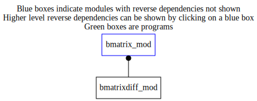

Dependency Diagrams:
Direct Dependency Diagram¶
 Reverse Dependency Diagram¶
Description
MODULE BmatrixDiff_mod (prefix=’bdiff’ category=’2. B and R matrices’)
- Purpose
Performs transformation from control vector to analysis increment using the background-error covariance matrix based on correlations modelled using a diffusion operator.
Quick access
- Routines
bdiff_bsqrt(),bdiff_bsqrtad(),bdiff_cain(),bdiff_cainad(),bdiff_copyfromstatevector(),bdiff_copytostatevector(),bdiff_finalize(),bdiff_getscalefactor(),bdiff_rdstats(),bdiff_readbgstdfield(),bdiff_reducetompilocal(),bdiff_scalestd(),bdiff_setup()Needed modules
midasmpi_mod: MODULE midasMpi_mod (prefix=’mmpi’ category=’8. Low-level utilities and constants’)
gridstatevector_mod: MODULE gridStateVector_mod (prefix=’gsv’ category=’6. High-level data objects’)
gridstatevectorfileio_mod: MODULE gridStateVectorFile_mod (prefix=’gio’ category=’4. Data Object transformations’)
horizontalcoord_mod: MODULE HorizontalCoord_mod (prefix=’hco’ category=’7. Low-level data objects’)
verticalcoord_mod: MODULE verticalcoord (prefix=’vco’ category=’7. Low-level data objects’)
varnamelist_mod: MODULE varNameList (prefix=’vnl’ category=’7. Low-level data objects’)
physicsfunctions_mod: MODULE physicsFunctions_mod (prefix=’phf’ category=’8. Low-level utilities and constants’)
utilities_mod: MODULE utilities_mod (prefix=’utl’ category=’8. Low-level utilities and constants’)
diffusion_mod: MODULE diffusion_mod (prefix=’diff’ category=’4. Data Object transformations’)Variables
Subroutines and functions
- subroutine bmatrixdiff_mod/bdiff_setup(hco_in, vco_in, cvdim_out[, mode_opt])¶
- Purpose
Setup the diffusion B matrix
- Arguments
hco_in [struct_hco ,inout,pointer]
vco_in [struct_vco ,inout,pointer]
cvdim_out [integer ,out]
- Options
mode_opt [character ,in,]
- Called from
- Call to
utl_tmg_start(),utl_isnamelistpresent(),utl_abort(),utl_tmg_stop(),gsv_varexist(),phf_calcdistance(),diff_setup(),mmpi_setup_latbands(),mmpi_setup_lonbands(),bdiff_rdstats()
- subroutine bmatrixdiff_mod/bdiff_getscalefactor(scalefactor_out)¶
- Purpose
Return the specified scaleFactor.
- Arguments
scalefactor_out (*) [real ,out]
- subroutine bmatrixdiff_mod/bdiff_rdstats(hco_in, vco_in)¶
- Purpose
To read background-error stats file.
- Arguments
hco_in [struct_hco ,pointer]
vco_in [struct_vco ,pointer]
- Called from
- Call to
- subroutine bmatrixdiff_mod/bdiff_readbgstdfield(hco_in, vco_in)¶
- Purpose
to read 2D background error standard deviation field stored on Z, U or G grid and interpolate it to the analysis grid
- Arguments
hco_in [struct_hco ,in,pointer]
vco_in [struct_vco ,in,pointer]
- Called from
- Call to
gsv_allocate(),gsv_zero(),gio_readfromfile(),gsv_deallocate()
- subroutine bmatrixdiff_mod/bdiff_scalestd()¶
- Purpose
To scale background-error standard-deviation values.
- Called from
- subroutine bmatrixdiff_mod/bdiff_bsqrt(controlvector_in, statevector)¶
- Purpose
Apply the sqrt of the B matrix
- Arguments
controlvector_in (cvdim_mpilocal) [real ,in]
statevector [struct_gsv ,inout]
- Called from
- Call to
- subroutine bmatrixdiff_mod/bdiff_bsqrtad(statevector, controlvector_out)¶
- Purpose
Apply the adjoint (i.e. transpose) of the sqrt of the B matrix
- Arguments
statevector [struct_gsv ,in]
controlvector_out (cvdim_mpilocal) [real ,out]
- Called from
- Call to
bdiff_copyfromstatevector(),diff_csqrtadj(),bdiff_cainad()
- subroutine bmatrixdiff_mod/bdiff_copytostatevector(statevector, gd)¶
- Purpose
Copy the working array to a statevector object
- Arguments
statevector [struct_gsv ,inout]
gd (mylonend-(mylonbeg)+1,mylatend-(mylatbeg)+1,numvar2d) [real ,in]
- Called from
- Call to
- subroutine bmatrixdiff_mod/bdiff_copyfromstatevector(statevector, gd)¶
- Purpose
Copy the contents of the statevector object to the working array
- Arguments
statevector [struct_gsv ,in]
gd (mylonend-(mylonbeg)+1,mylatend-(mylatbeg)+1,numvar2d) [real ,out]
- Called from
- Call to
- subroutine bmatrixdiff_mod/bdiff_reducetompilocal(cv_mpilocal, cv_mpiglobal)¶
- Purpose
Extract the subset of the global control vector needed for local MPI task
- Arguments
cv_mpilocal (*) [real ,out]
cv_mpiglobal (*) [real ,in]
- Called from
- subroutine bmatrixdiff_mod/bdiff_cain(controlvector_in, gd_out)¶
- Purpose
Transform from control vector to working array
- Arguments
controlvector_in (cvdim_mpilocal) [real ,in]
gd_out (mylonend-(mylonbeg)+1,mylatend-(mylatbeg)+1,numvar2d) [real ,out]
- Called from
- subroutine bmatrixdiff_mod/bdiff_cainad(gd_in, diffcontrolvector_out)¶
- Purpose
Transform from working array to control vector
- Arguments
gd_in (mylonend-(mylonbeg)+1,mylatend-(mylatbeg)+1,numvar2d) [real ,in]
diffcontrolvector_out (cvdim_mpilocal) [real ,out]
- Called from
- subroutine bmatrixdiff_mod/bdiff_finalize()¶
- Purpose
Deallocate some arrays after we don’t need the B matrix anymore.
- Called from
{kind=link}
{kind=link}